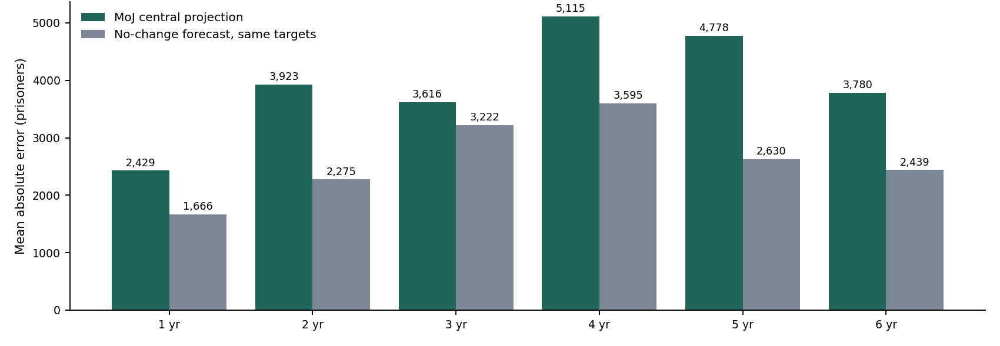
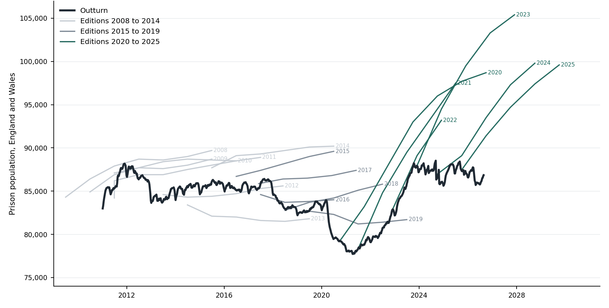
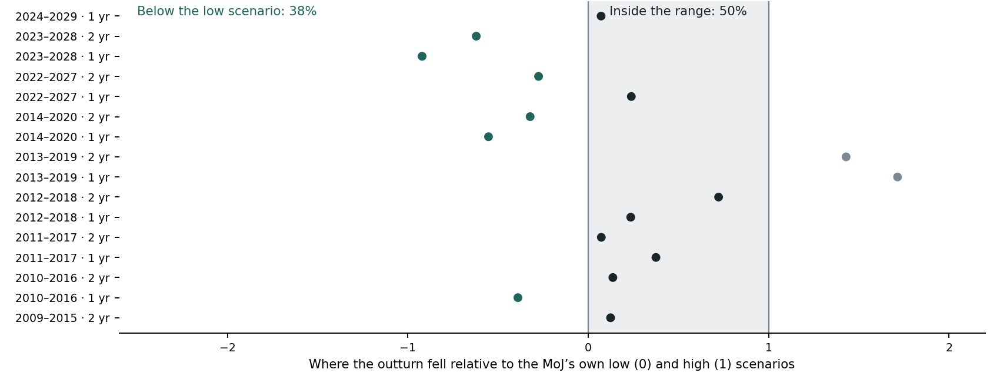
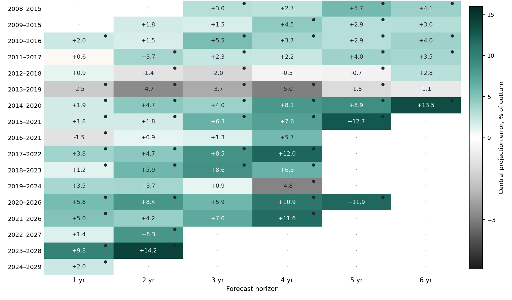
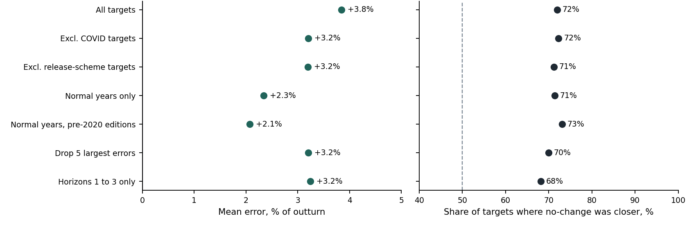
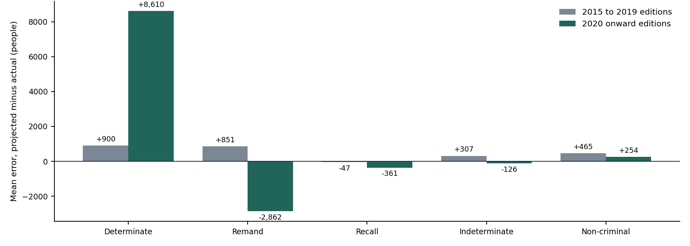

A walk-forward scorecard of eighteen editions, 2008 to 2025
The eighteen editions run from Prison Population Projections 2008–2015 to 2025–2030. Each publishes a central path at annual reference points; earlier editions publish it as one of three scenario columns, later editions as a single path broken down by custody type. The 2008 to 2019 editions sit as attachments on a single rolling gov.uk page; the six recent editions have their own pages. All were parsed into one table with scenario labels normalised to central, low and high.
Outturn is the weekly prison population bulletin, 787 bulletins from January 2011 to August 2026, parsed into one series and interpolated to each edition’s published reference date. The reference date matters: it moves between end June, 1 June, end September, 1 July and end November across editions, and horizons are not comparable unless the published dates are used. Targets before January 2011 cannot be scored, so the 2008 and 2009 editions are scored from their second year.
Whether the projections are measured on the same basis as the bulletins was tested rather than assumed. Ten editions publish their own unrounded base-year actual. Those match the bulletin total, which includes HMPPS-operated immigration removal centres before 2022, more closely than the prisons-only figure: mean absolute gap 258 against 394. Since 2018 the agreement is within 40 people. The bulletin total is therefore used.
The benchmark is a forecaster with no model who, at publication, carries the current population forward unchanged. It is available at the same moment with the same information, and its errors are computed on the same targets. Where an edition publishes no base actual, the bulletin value at 30 June of the edition year is used. For the 2008, 2009 and 2010 editions, whose base years predate the weekly series, the 30 June prison population is taken from the Population in Custody bulletins for June 2009 and June 2010 (83,194, 83,391 and 85,002), so every one of the 75 targets has a like-for-like benchmark.
Horizon is the calendar year of the reference date less the edition year, so a 2020 edition’s September 2021 target is one year ahead. Error is projected minus actual; a positive error means the projection was too high.
| Horizon | Mean error | Mean abs. % error | Share too high | MoJ MAE | No-change MAE | MoJ / no-change | No-change closer |
|---|---|---|---|---|---|---|---|
| 1 year | +2.4% | 2.9% | 87% | 2,429 | 1,666 | 1.46 | 73% |
| 2 years | +3.8% | 4.7% | 87% | 3,923 | 2,275 | 1.72 | 67% |
| 3 years | +3.5% | 4.3% | 86% | 3,616 | 3,222 | 1.12 | 64% |
| 4 years | +4.6% | 6.1% | 79% | 5,115 | 3,595 | 1.42 | 71% |
| 5 years | +5.2% | 5.7% | 78% | 4,778 | 2,630 | 1.82 | 100% |
| 6 years | +4.3% | 4.6% | 86% | 3,780 | 2,439 | 1.55 | 57% |


| Editions | Mean error | Mean abs. % error | Share too high | MoJ MAE | No-change MAE | No-change closer |
|---|---|---|---|---|---|---|
| 2008 to 2014 | +2.3% | 3.4% | 75% | 2,895 | 1,623 | 29 of 40 |
| 2015 to 2019 | +4.3% | 4.9% | 91% | 3,984 | 3,212 | 15 of 21 |
| 2020 to 2025 | +7.6% | 7.6% | 100% | 6,506 | 4,703 | 10 of 14 |
Two further tests do not depend on magnitude. First, direction: did the central path get the sign of the change from the base year right? Across 75 targets it did so 63% of the time, and 53% at both one and two years. The projections called a rise in 73% of targets; the population rose in 52%. At the horizons that bear on capacity decisions, the central path is about as informative on direction as a coin toss, and it is biased toward predicting growth. Second, coverage: forty-five targets have a published low and high scenario. Outturn fell inside that range 67% of the time overall, but only 50% at one and two years, where it fell below the low scenario in 38% of targets. Coverage improves to 86% at five years because the range widens: the mean half-width at three years, 3,343, is about the same as the mean absolute error at three years, 3,616.

| Edition | 1 yr | 2 yr | 3 yr | 4 yr | 5 yr | Targets | No-change wins | All too high |
|---|---|---|---|---|---|---|---|---|
| 2008–2015 | n/a | n/a | +3.0 | +2.7 | +5.7 | 5 | 4 | yes |
| 2009–2015 | n/a | +1.8 | +1.5 | +4.5 | +2.9 | 5 | 2 | yes |
| 2010–2016 | +2.0 | +1.5 | +5.5 | +3.7 | +2.9 | 6 | 5 | yes |
| 2011–2017 | +0.6 | +3.7 | +2.3 | +2.2 | +4.0 | 6 | 4 | yes |
| 2012–2018 | +0.9 | −1.4 | −2.0 | −0.5 | −0.7 | 6 | 3 | no |
| 2013–2019 | −2.5 | −4.7 | −3.7 | −5.0 | −1.8 | 6 | 5 | no |
| 2014–2020 | +1.9 | +4.7 | +4.0 | +8.1 | +8.9 | 6 | 6 | yes |
| 2015–2021 | +1.8 | +1.8 | +6.3 | +7.6 | +12.7 | 5 | 5 | yes |
| 2016–2021 | −1.5 | +0.9 | +1.3 | +5.7 | 4 | 1 | no | |
| 2017–2022 | +3.8 | +4.7 | +8.5 | +12.0 | 4 | 4 | yes | |
| 2018–2023 | +1.2 | +5.9 | +8.6 | +6.3 | 4 | 4 | yes | |
| 2019–2024 | +3.5 | +3.7 | +0.9 | −4.8 | 4 | 1 | no | |
| 2020–2026 | +5.6 | +8.4 | +5.9 | +10.9 | +11.9 | 5 | 4 | yes |
| 2021–2026 | +5.0 | +4.2 | +7.0 | +11.6 | 4 | 2 | yes | |
| 2022–2027 | +1.4 | +8.3 | 2 | 1 | yes | |||
| 2023–2028 | +9.8 | +14.2 | 2 | 2 | yes | |||
| 2024–2029 | +2.0 | 1 | 1 | yes |

A hostile reader will ask whether the result is an artefact of two shocks that no projection could have foreseen: the COVID fall of 2020 to 2021, and the emergency releases from October 2023. It is not. The table below re-scores the central path after removing those target years, after removing both, after switching outturn to the prisons-only definition, and after dropping the five largest misses.
| Cut | Targets | Mean error | Share too high | No-change closer | Wins at every horizon |
|---|---|---|---|---|---|
| All targets | 75 | +3.8% | 84% | 72% | yes |
| Excluding COVID targets, Mar 2020 to Dec 2021 | 65 | +3.2% | 82% | 72% | yes |
| Excluding release-scheme targets, Oct 2023 on | 66 | +3.2% | 82% | 71% | yes |
| Excluding both: normal years only | 56 | +2.3% | 79% | 71% | yes |
| Normal years, pre-2020 editions only | 52 | +2.1% | 77% | 73% | yes |
| Prisons-only outturn, IRCs excluded | 58 | +3.9% | 84% | 74% | yes |
| Dropping the five largest absolute errors | 70 | +3.2% | 83% | 70% | yes |
| Horizons one to three only | 44 | +3.2% | 86% | 68% | yes |

Targets within an edition are not independent, so the unit of inference should be the edition. Fifteen of seventeen editions have a positive mean error (one-sided sign test p = 0.001). Thirteen of seventeen have a higher mean absolute error than the no-change forecast (p = 0.02). The mean of edition-level mean errors is +4.2% with a standard deviation of 3.6, t = 4.8 on seventeen observations. Even seventeen overstates independence, because editions share target years and a low outturn year counts against several at once; the honest description is a small, correlated sample that points the same way on every test available.
Two objections cannot be settled from these data. First, the no-change forecast wins because the population was flat; in the trending decades before 2011 it would have lost, and the MoJ’s method was built in that era. The scorecard is a statement about the last fifteen years, not about forecasting in general. Second, if capacity binds on the population through channels other than release timing, the pre-2020 overshoot could itself be constrained demand rather than error. The proportion of sentence served held at 60 to 64% throughout 2015 to 2023, which argues against a binding constraint on release, but it does not rule out effects through remand, home detention curfew or sentencing behaviour.
Every edition since 2017 publishes an unrounded base-year actual broken down by custody type: remand, determinate, indeterminate, recall, non-criminal. Where an earlier edition projected that same reference month, the error can be decomposed component by component. Thirteen such pairs exist.
| Component | Mean error | Share of total error | Largest contributor in |
|---|---|---|---|
| Determinate | +3,272 | 95% | 54% of pairs |
| Other (non-criminal, fine defaulters) | +426 | 12% | 15% |
| Indeterminate | +174 | 5% | 0% |
| Recall | −144 | −4% | 0% |
| Remand | −292 | −8% | 31% |

Determinate accounts for 95% of the error and recall is never the largest contributor. Remand has a near-zero mean but a mean absolute error of 1,893: a large miss in both directions that averages out. The two biggest components err in opposite directions, so the gross component error, 6,896 on average, is 1.9 times the net error of 3,627. The worst case is the 2022 edition’s November 2023 target: net error 1,165, gross 8,723, a ratio of 7.5. It got the total nearly right by pairing a determinate overshoot of 4,608 with a remand undershoot of 3,086.
The composition shifts across eras. Editions from 2015 to 2019 were mildly high on everything: determinate +900, remand +851. Editions from 2020 onward are +8,610 on determinate and −2,862 on remand. Nineteen successive-edition revisions of a common target date point the same way: determinate accounts for 105% of revision movement and is revised down, by 2,621 on average, edition after edition.
The interpretation is that the determinate overshoot is policy: release points were cut after each edition was published, by ECSL in 2023, SDS40 in 2024 and the progression model in 2026. The remand undershoot is demand: the court backlog. These are separate failures that happen to offset, and reporting a single net bias hides both.
The MoJ’s strongest reply is that the projections are conditional. They model the population under existing release rules; the rules then change in response; the projection is falsified by design. On this reading the overshoot is a measure of the policy response, not of forecasting skill, and a naive forecast wins precisely because it silently assumes the government will act.
The 10-Year Prison Capacity Strategy commits up to £7 billion to 14,000 places by 2031 against a demand assumption of about 3,000 additional prisoners a year in the absence of further action. The realised growth rate over the fifteen years of weekly data is 246 a year. No five-year window since 2011 has sustained even 2,000 a year.
That is a fair description of what has happened and this note does not dispute it. But it does not rescue the projections for the purpose they are put to. A counterfactual that has been too high in every year since 2020, and that the government itself falsifies each time it is published, cannot carry that weight.
There is a second reason the defence is incomplete. The no-change forecast wins in the 2008 to 2014 editions too: closer on 29 of 40 targets, with a mean absolute error of 1,623 against the MoJ’s 2,895, on identical targets. Those editions predate ECSL, SDS40 and the progression model by a decade. The overshoot predates the policy responses that are said to explain it.
Fifteen years of weekly data show a prison estate that has run between 96% and 99% full in every calendar year, with headroom above 5,000 in ten weeks in total. The supply side has delivered a net 641 places since January 2011 on this series, or 1,005 between 2010 and 2024 on the Public Accounts Committee’s figure, against thousands announced. The demand side is planned against a growth rate that has never been sustained. Both halves of the capacity plan rest on numbers that the record does not support, and the demand half has not previously been scored.
The 2025–2030 edition projects 91,400 for September 2026. The August 2026 bulletin gives 86,843. The nineteenth edition is expected in December 2026 and will be scored on publication.
Corrections. Five made before publication and recorded in the definitions log: an unscored benchmark for three early editions, a direction-accuracy figure of 43% corrected to 63%, non-like-for-like error tables, a misaligned row, and the magnitude claim qualified by the robustness section.
Version history. v1.1 corrects the numbering of two tables, which were transposed, and the publication date on the title block. No text, figure or number changed.
The weekly series (population, capacity, headroom, operating margin, 2011 to date), the establishment panel (2018 to date), the eighteen projection editions in one table, the scorecard by edition, the decomposition and a 106-entry log of definitional changes and corrections are published with this note. The repository includes the refresh script and a standing forecast register, lodged on 3 September 2026, that will be scored against each weekly bulletin without amendment.